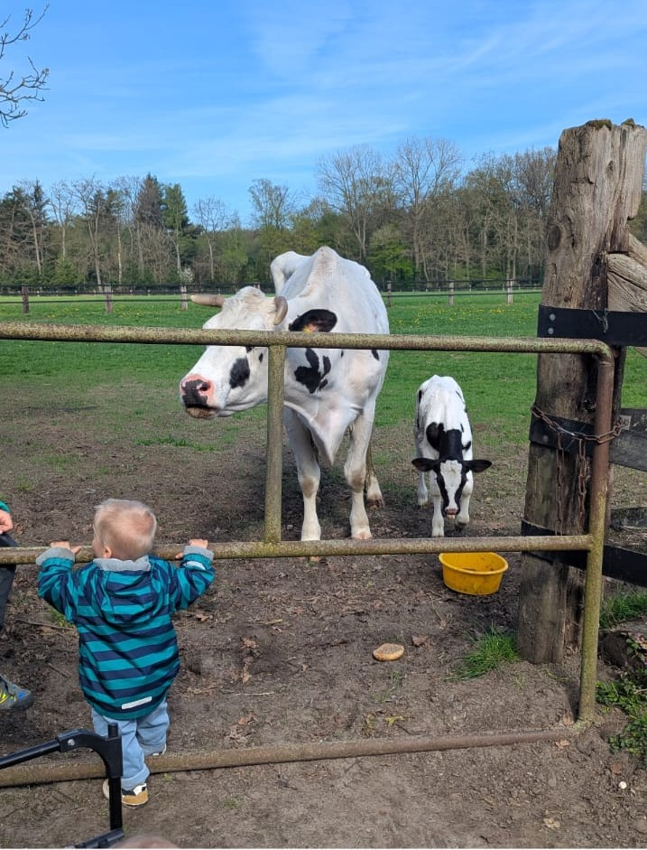
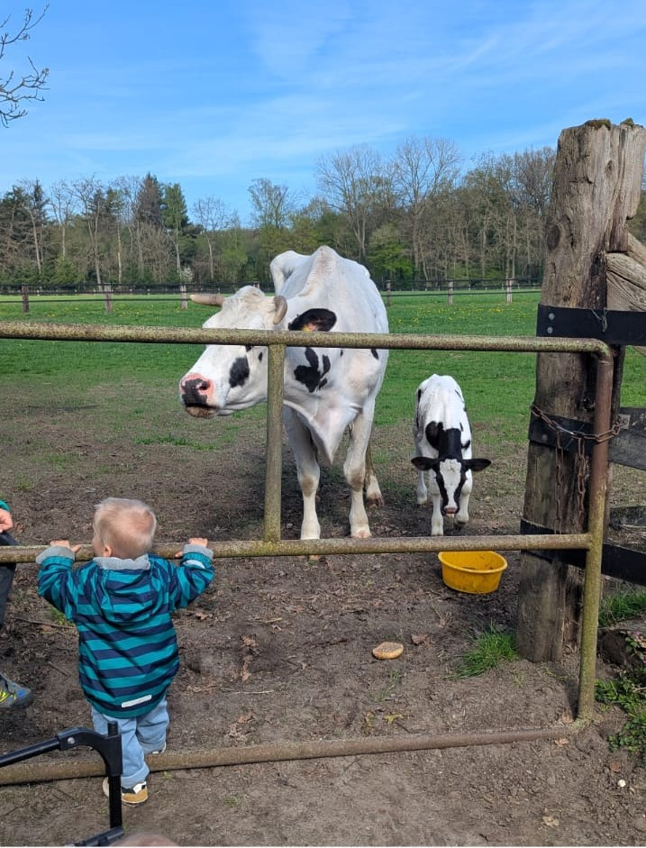
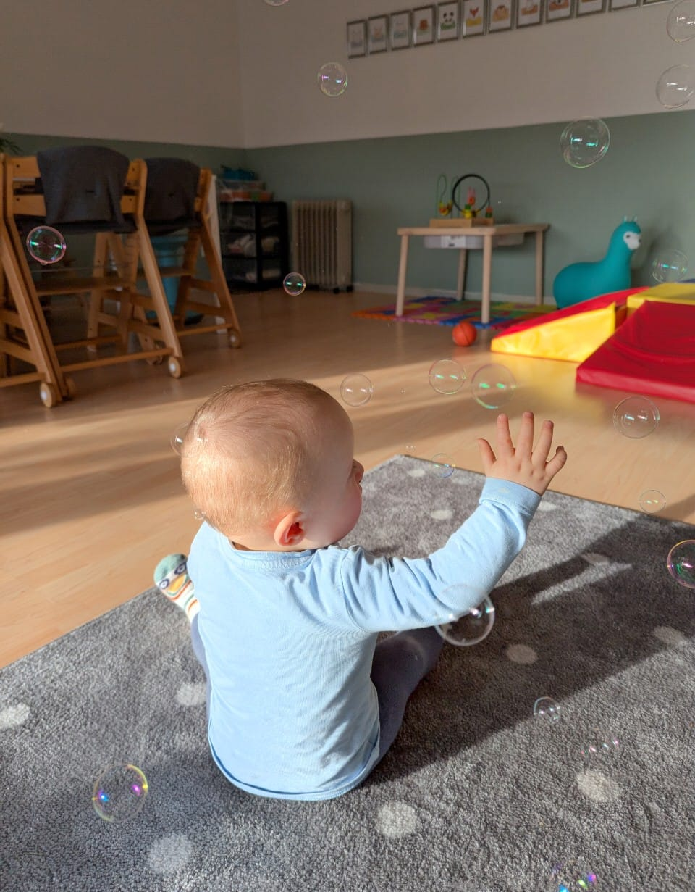
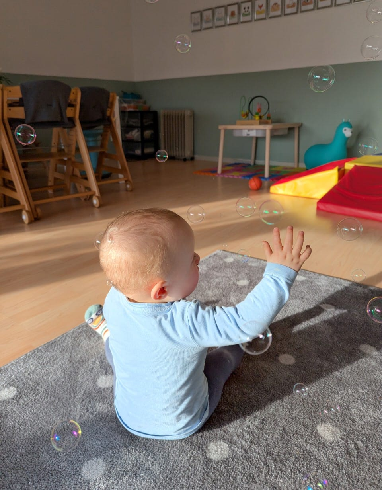

Großtagespflege „Die halben Meter“
Ein Ort zum Entdecken, Spielen und Wachsen – mit Herz und Hand.

Über uns
Bei Die halben Meter schaffen wir eine geborgene Umgebung, in der Kinder sich sicher fühlen, kreativ werden und ihre Persönlichkeit entfalten. Unser Team arbeitet bindungsorientiert, naturverbunden und spielerisch – immer auf Augenhöhe mit den Kleinsten.
- Liebevolle Betreuung mit festen Bezugspersonen
- Kleine Gruppen, viel Zeit im Grünen
- Spielerisches Lernen mit Musik, Bewegung und Sprache
Unser Schwerpunkt
Die Natur hautnah erleben
Der Schwerpunkt unseres Konzeptes ist die individuelle Entwicklung jedes einzelnen Kindes inmitten einer natürlichen und ländlichen Umgebung. Unser Grundgedanke ist es, den Kindern einen Raum zu geben, in dem ganzheitliche Erfahrungen gemacht werden können und ein selbstverständlicher Bezug zur Natur hergestellt wird. Weit weg von verschmutzten und lauten Großstädten können sich unsere Kinder frei und ungestört auf einem Bauernhof entfalten und alle wichtigen Entwicklungsschritte in Feld und Wald erleben. Die Tier- und Pflanzenwelt des Bauernhofes unterstützt uns in der Umsetzung, die frühkindliche Bildung in allen Lebensbereichen zu fördern. Ein kontinuierlicher Kontakt zur Natur sensibilisiert das Kind und fördert einen behutsamen Umgang mit ihr.
Das Spielen im Wald schult die Sinne, ihre Phantasie und ihre Motorik und bietet viel Freiraum für Bewegung und körperliche Aktivitäten. Die Methodenvielfalt spricht Körper und Verstand sowie die emotionale und seelische Ebene des Kindes an. Bewusste Sinnes- und Wahrnehmungsschulung in der unmittelbaren Naturbegegnung ist ein wichtiges methodisches Element.
Galerie
 



 


Kontakt
Neugierig geworden? Wir freuen uns, euch kennenzulernen.
Adresse
Heideweg 6
59399 Olfen
Betreuungszeiten
Montags bis Freitags von 7.30–14.30 Uhr
Kontakt
diehalbenmeter2024@gmail.com